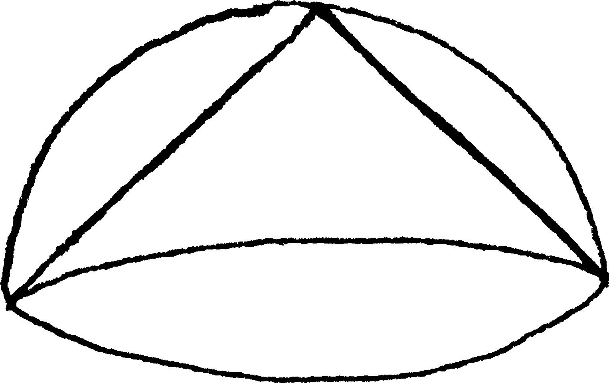
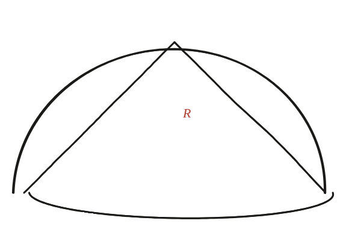

Demostra que un con dins d'un hemisferi ocupa exactament la meitat del volum.

No calculis els dos volums per separat encara
Si ja se saben les fórmules del volum del con i de l'esfera, es podria fer per càlcul directe —però l'objectiu aquí és veure-ho també per comparació directa de seccions, el mateix moviment ja fet servir abans per comparar volums d'un con i d'una piràmide sense fórmules.
Mira el sòlid que "falta"
Dins del cilindre que envolta l'hemisferi (mateix radi, mateixa alçada), hi ha dos sòlids: l'hemisferi mateix, i —si s'hi retalla també un con invertit amb el vèrtex al centre de la base i la base dalt de tot— el sòlid que queda entre el cilindre i aquest con. Aquest sòlid "que queda" té una propietat notable en relació amb l'hemisferi.
La construcció
Aquesta figura mostra el con inscrit de l'enunciat —vèrtex a dalt, base a baix, tocant l'hemisferi— no el con invertit complementari del pas anterior: són dos objectes relacionats però diferents. El pla horitzontal marcat en vermell, a una alçada h qualsevol, és l'eina de comparació: talla el con en dos punts (marcats), i és exactament aquest mateix pla —a la mateixa alçada— el que cal comparar amb la secció de l'hemisferi per completar l'argument.

Tancar-ho
A qualsevol alçada h des de la base, la secció horitzontal del sòlid "cilindre menys con invertit" té exactament la mateixa àrea que la secció de l'hemisferi a la mateixa alçada —aquest és el pas de Cavalieri: dues seccions iguals a totes les alçades implica el mateix volum. Coneixent el volum del cilindre (πR³) i el del con invertit ((1/3)πR³) per separat, se'n dedueix el de l'hemisferi: πR³ − (1/3)πR³ = (2/3)πR³.
I ara la comparació, amb un avís, perquè aquí hi ha una confusió fàcil: el con invertit auxiliar i el con inscrit de l'enunciat no tenen un el doble de volum que l'altre —tenen exactament el mateix. Tots dos tenen radi R i alçada R, o sigui (1/3)πR²·R = (1/3)πR³; l'un és l'altre girat de cap per avall. La meitat que la pregunta demana no és entre els dos cons: és entre el con inscrit i l'hemisferi, (1/3)πR³ contra (2/3)πR³.
Un con inscrit en un hemisferi n'ocupa exactament la meitat del volum: (1/3)πR³ contra (2/3)πR³. Que surti exactament 1/2, sense arrodoniments, no és casualitat: apareix cada vegada que dos sòlids tenen la mateixa àrea de secció a cada alçada, o àrees en una proporció fixa —el mateix argument de Cavalieri.
Comprovació
Amb radi R=3: volum de l'hemisferi = (2/3)πR³ = 18π. Volum del con inscrit (radi 3, alçada 3) = (1/3)πR²h = 9π. La raó con/hemisferi és 9π/18π = 1/2 exactament —ni més ni menys que la meitat, per a qualsevol R.